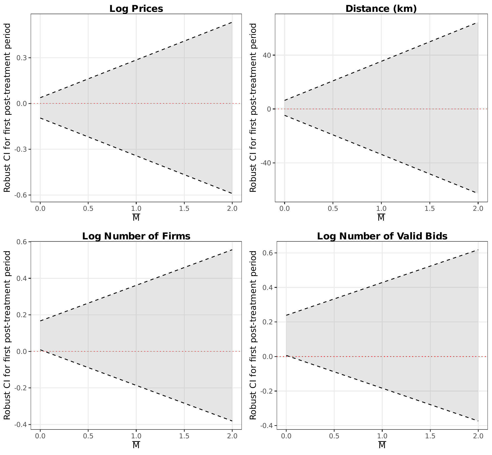
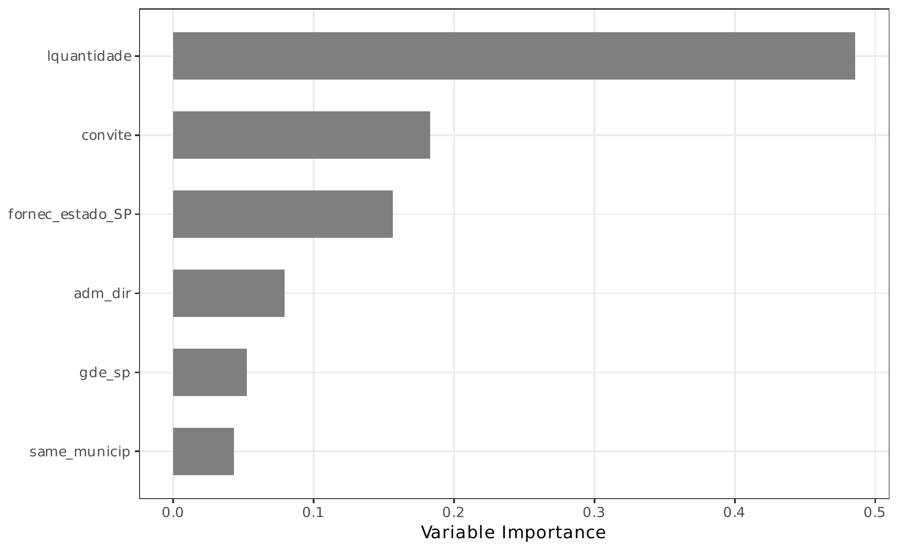
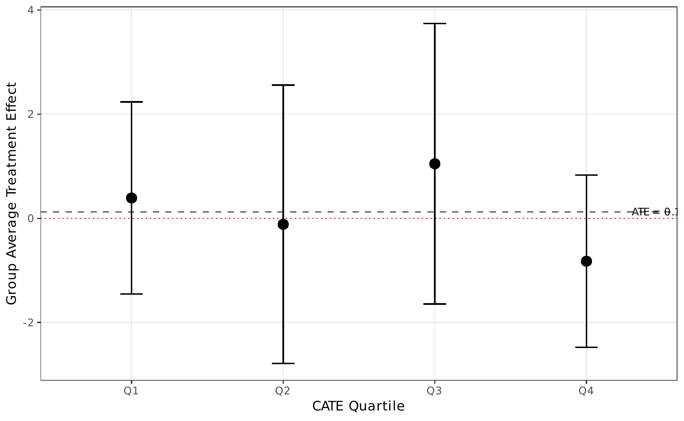
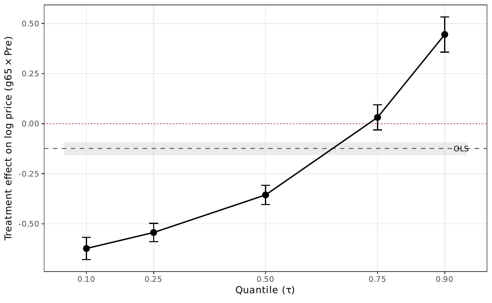
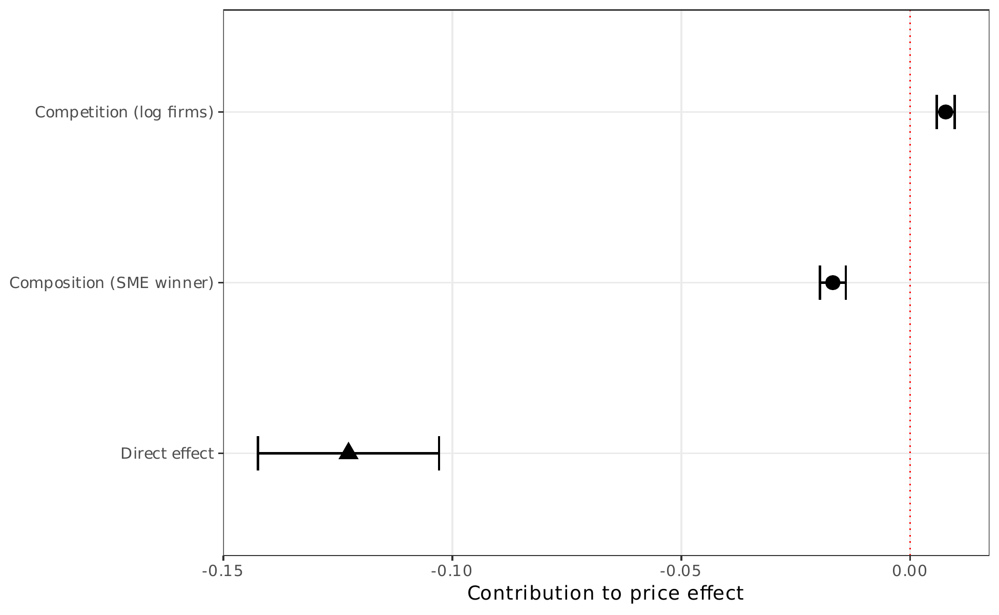

Advanced Methods¶
This page documents five advanced econometric methods that complement the main DiDiR analysis. Each method addresses a specific concern or deepens the understanding of the treatment effect.
1. Parallel Trends Sensitivity (HonestDiD)¶
The HonestDiD method (Rambachan and Roth, 2023) constructs robust confidence intervals for the treatment effect under controlled violations of the parallel trends assumption. The parameter \(\bar{M}\) governs the maximum amount by which the post-treatment trend may deviate from the pre-treatment path.
{kind=link}

Key finding
The main price effect remains statistically significant even under substantial deviations from strict parallel trends, providing strong evidence that the results are not an artifact of pre-existing differential trends.
2. Sample Selection Correction (Lee Bounds)¶
The price and distance regressions condition on item completion. If the treatment affects completion rates, this creates sample selection bias. Lee (2009) bounds correct for this by trimming the outcome distribution in the excess-selected cell.
| Log prices (lower) | Log prices (upper) | Distance (lower) | Distance (upper) | |
|---|---|---|---|---|
| g65 x Pre | -0.1306*** | -0.1227*** | 10.775*** | 10.804*** |
| (0.0096) | (0.0085) | (2.232) | (2.233) | |
| Trimming proportion | 8.82% |
Key finding
The bounds for log prices range from -0.131 to -0.123, both highly significant. The tightness of the bounds indicates that sample selection has a negligible impact on the main price estimates.
3. Heterogeneous Treatment Effects (Causal Forest)¶
A causal forest (Athey, Tibshirani, and Wager, 2019) estimates individualized treatment effects using an honest, doubly-robust random forest on FWL-residualized outcomes.
Variable Importance¶
{kind=link}

Group Average Treatment Effects (GATE)¶
{kind=link}

| Q1 (lowest) | Q2 | Q3 | Q4 (highest) | |
|---|---|---|---|---|
| GATE | 0.391 | -0.114 | 1.048 | -0.824 |
| (0.941) | (1.363) | (1.374) | (0.844) | |
| ATE (full sample) | 0.125 (0.578) |
Interpretation
The causal forest reveals modest heterogeneity in treatment effects, with item quantity as the key moderator. The imprecise GATE estimates reflect the challenge of detecting heterogeneity in residualized data with substantial within-item variation.
4. Distributional Effects (Quantile DiD)¶
Quantile difference-in-differences (Canay, 2011) estimates how the treatment effect varies across the price distribution, going beyond the mean effect captured by OLS.
{kind=link}

| \(\tau = 0.10\) | \(\tau = 0.25\) | \(\tau = 0.50\) | \(\tau = 0.75\) | \(\tau = 0.90\) | |
|---|---|---|---|---|---|
| g65 x Pre | -0.623*** | -0.543*** | -0.356*** | 0.031 | 0.445*** |
| (0.028) | (0.023) | (0.024) | (0.032) | (0.045) | |
| OLS benchmark | -0.124 (0.017) |
Key finding
The benefits of open competition are concentrated at the lower quantiles of the price distribution (\(\tau \leq 0.50\)), where competitive bidding drives prices down most effectively. At the upper tail (\(\tau = 0.90\)), prices are actually higher under open tenders, possibly reflecting specialized items with thin supplier markets.
5. Mechanism Decomposition (Gelbach)¶
The Gelbach (2016) decomposition partitions the total price effect into contributions from observable channels by comparing a "short" regression (treatment + controls) with a "full" regression that adds mediators.
{kind=link}

| Channel | Coefficient | SE | % of gap |
|---|---|---|---|
| Short regression (g65 x Pre) | -0.1318*** | (0.0096) | |
| Full regression (g65 x Pre) | -0.1227*** | (0.0101) | |
| Gap (short - full) | -0.0091 | 100% | |
| Competition (log firms) | 0.0078*** | (0.0010) | -85% |
| Composition (SME winner) | -0.0169*** | (0.0014) | 185% |
Interpretation
The competition and composition channels operate as partially offsetting mechanisms. Open tenders increase competition (lowering prices), but also attract non-SME winners whose conditional pricing effects partially offset the competition gains. The large unexplained component (-0.123) indicates that most of the price effect operates through channels not captured by these two mediators.